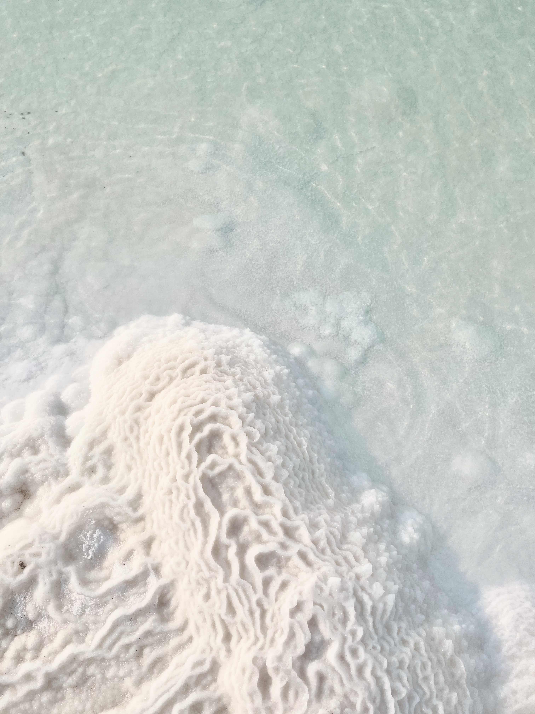
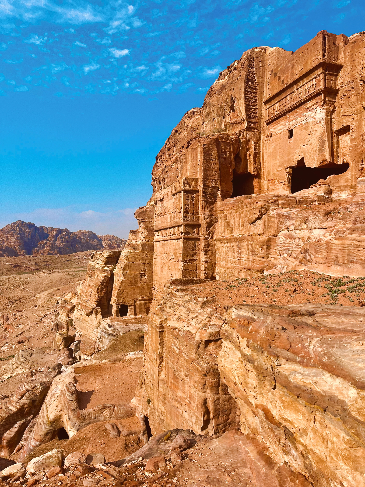
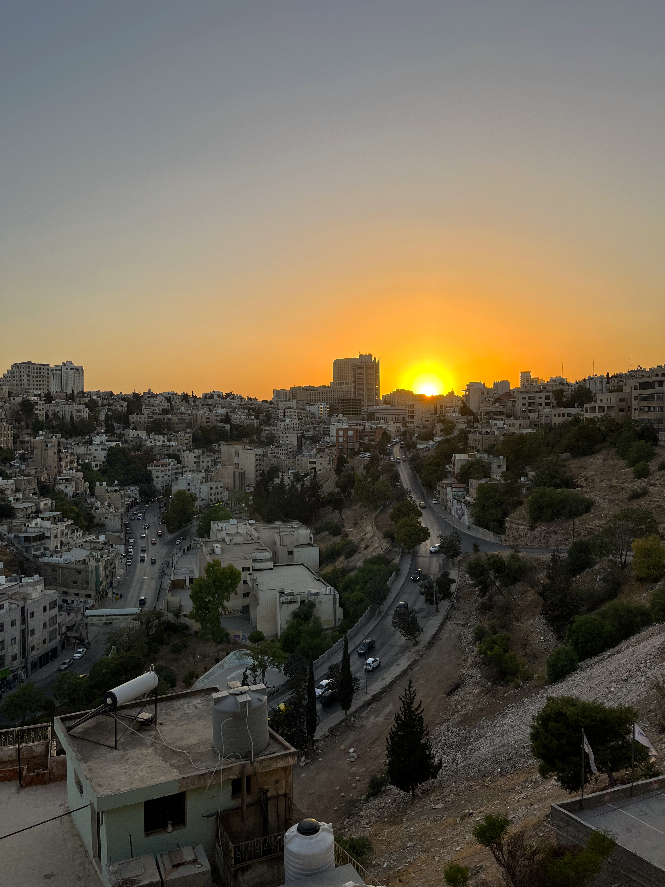

Jordania sijaitsee Lähi-idän sydämessä - naapurimaat ovat Palestiina, Syyria, Irak ja Saudi-Arabia. Etelässä lyhyt rantaviiva Akaban lahdella avaa pääsyn Punaiselle merelle. Pinta-alaltaan maa on noin neljännes Suomesta - pienempi kuin moni odottaisi, mutta nähtävää riittää moneksi matkaksi.
Jordania on yksi alueen vakaimmista ja turvallisimmista maista. Jordanialaiset ovat tunnettuja lämpimästä vieraanvaraisuudestaan - varmasti kuulet paikallisten "Welcome to Jordan!" enemmän kuin kerran.
Virallinen kieli on arabia, mutta englannilla pärjää hyvin kaikkialla missä turistit liikkuvat - ei siis tarvitse stressata kielimuureista.

Jordania on yksi maailman vanhimmista asutusalueista. Jo kivikaudella ihmiset asuivat näillä seuduilla, ja vuosituhansien ajan alue oli suurten imperiumien risteyspiste -
Egyptiläiset, assyrialaiset, babylonialaiset, persialaiset ja roomalaiset jättivät kaikki jälkensä Jordanian alueelle. Nabatealaiset rakensivat kallioon upean Petran kaupungin noin 300-luvulla eKr. Ristiretkeläiset rakensivat valtavan Karakin linnoituksen, ja Ajlounin linna rakennettiin myöhemmin puolustautumaan heitä vastaan. Ottomaanien valtakunta hallitsi aluetta noin 400 vuoden ajan. Ensimmäisen maailmansodan jälkeen alueelle syntyi nykyisen Jordanian edeltäjävaltio.
Kaikki nämä kerrostumat näkyvät kohteissa ympäri maata. Raamatullinen perintö on myös vahva: Jordaniassa sijaitsevat muun muassa Jeesuksen kastepaikaksi tunnistettu Betania sekä Nebo-vuori, jolta Mooseksen sanotaan katsoneen Luvattua maata. Historia ei ole täällä kirjoissa, vaan käsin kosketeltavissa.

Jordanian ilmasto vaihtelee enemmän kuin moni odottaa. Ammanissa ja pohjoisessa on selkeät neljä vuodenaikaa: talvella voi sataa lunta, kesällä lämpömittari nousee helposti yli 35 asteen. Wadi Rumissa taas päivät voivat olla helteisiä ja yöt lähellä nollaa.
Paras aika matkustaa on keväällä maaliskuusta toukokuuhun tai syksyllä syyskuusta marraskuuhun. Sää on silloin miellyttävä, noin 17-28 astetta, ja maisema on parhaimmillaan.
Ramadanin aikana kannattaa varautua siihen, että osa ravintoloista on suljettuna päivisin - mutta tunnelma on silloin ainutlaatuinen.
